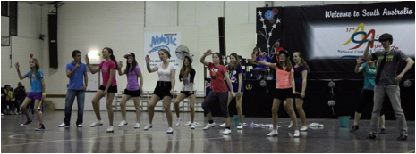
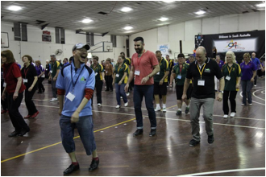
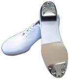

Clogging
Clogging (or Appalachian Mountain Folk Dance) is a type of folk dance in which the dancer's footwear is used musically by striking the heel, the toe, or both against a floor or each other to create audible percussive rhythms, usually to the downbeat with the heel keeping the rhythm. Clogging has its origins in the Southern Appalachian Mountains of the United States of America. While it has strong ties to the step dances of the British Isles brought to the region by white settlers, clogging is also influenced by the traditional dance of Native Americans, and the traditional solo dances of African Americans.
Clogging is a misnomer, since it is not performed in clogs, although some of the original step dances from Europe were. Nevertheless, the name persists, although in Appalachia, this form of percussive dance is often only known as buck dancing or flatfooting or just "dancing".
In the United States, clogging takes two major forms: traditional Appalachian flatfoot dance and precision (or modern) clogging.
Appalachian clogging can still be found in western North Carolina, West Virgina, southwestern Virginia, and other places in the southern Appalachian Mountains. Interest in Appalachian dance was significantly revived in the late 1970's by the Green Grass Cloggers. Cloggers in this style, dance to live music; either the string band music of the southern Appalachian Mountains (featuring fiddle, banjo and guitar) or to bluegrass music.
Precision (or modern) clogging was developed around World War II, and is danced to a variety of music, usually recorded, including rock and country & western. Precision cloggers wear shoes with jingle taps. The emphasis of precision clogging is on everyone clogging the same step at the same time. This is the form of clogging danced most often in Australia.
